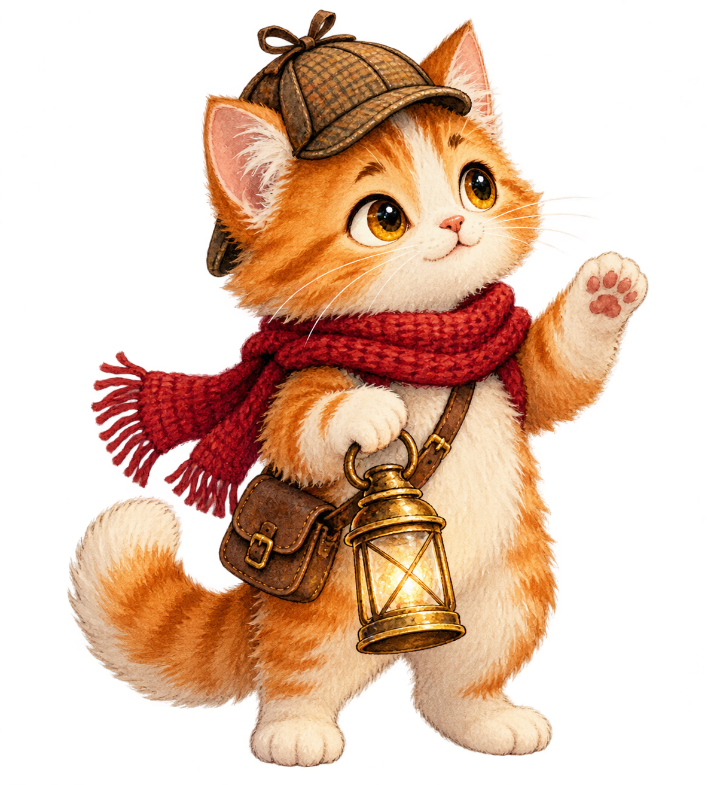

Сказочный квест на 10–15 минут
Снегоград
без Нового года
Главная Звезда исчезла, городские часы застыли на 23:59, а праздник будто забыл дорогу. Котик-детектив Плюш уже на площади.

Главная Звезда исчезла, городские часы застыли на 23:59, а праздник будто забыл дорогу. Котик-детектив Плюш уже на площади.

Плюш заметил что-то в снегу у самого фонаря.
«Новый год не украли.
Его спрятали там,
где никто не спешит».
Искры праздника спрятались в четырёх уголках города.